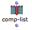
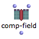

Class-Array Tools Overview
The values of array components can be accessed and modified via specific tools. These are especially designed for advanced applications, in particular in the OMChroma project, where synthesis parameters are specified using subclasses of class-array . These applications allow the access and extension of specified parameters at synthesis time.
To access these tools, select the the Functions/Basic Tools/Array menu.
These functions mostly operate on array components – or columns –, since they are transverse to the different fields – or lines – that were specified via the inputs of the array box.
Instances of the internal class component are returned and manipulated by these functions.
More information on these functions and their arguments is available in the online function reference – type d.
Accessing Array Data
| get-comp returns the nth component of an array. |
 | comp-list returns a list of values in a component, corresponding to the different array fields. |
 | comp-field returns the value of a specific field in a given component. This field can be specified by an index (number) or by a name (string). |
More information on these functions and their arguments is available in the online function reference – type d .

Here,
- get-comp returns the value of the second component , or column, of the class-array
- comp-list returns the list of values belonging to the second column of the class- array : a chord and two ordinates
- comp-field returns the value of the first field , or line, corresponding to the second column : a chord.
Remember that numbering starts at 0, consequently, 0 = 1st element, 1 = 2nd element...
Modifying Array Data
| comp-list can also set the list of values of a given components via an optional second input. |
| comp-field can also set the value of a given field of the components via an optional third input. This field can be specified by an index (number) or by a name (string). |
| new-comp function allows to create a new component with a given list of values. |
| add-comp adds a component at a given position in the array. |
| remove-comp removes a component from the array. |
Here,
|
These functions are destructive : the input parameters, that is, the array or its internal components are modified at each evaluation. In the previous example, the array on the top of the figure gets one new component each time add-comp is evaluated.